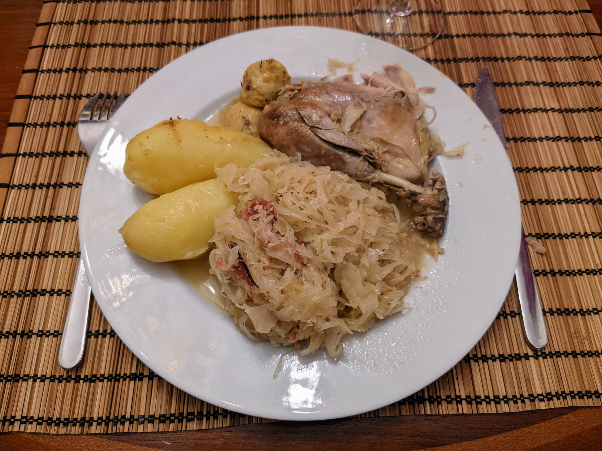

Pintade à la choucroute

Pour 5 personnes :
- Une pintade
- 1,5kg de choucroute crue
- Une quinzaine de patates
- Quelques tranches de lard fumé
- Un oignon
- Quatre clous de girofle
- Une bonne cuillère à soupe de baies de genièvre
- Un bouquet garni
- Une bouteille de riesling d'Alsace
- Une cuillère à soupe de saindoux
- Une bonne cuillère à soupe de graisse d'oie ou de canard (ou bien la même quantité de saindoux)
- Sel, poivre
- Faire blanchir la choucroute : faire bouillir de l'eau (non salée) dans une grande casserole et y mettre la choucroute pendant 10 minutes. Puis, la passer sous l'eau froide, et la presser poignée par poignée pour l'égoutter.
- Mettre un peu de saindoux, de sel et de poivre à l'intérieur de la pintade. Puis, faire fondre de la graisse d'oie (ou du saindoux) au fond d'une cocotte, et faire revenir la pintade de tous les côtés jusqu'à ce qu'elle ait pris une jolie couleur partout. La saler sur l'extérieur.
- Retirer la pintade et la réserver dans du papier alu. Étaler le lard fumé au fond de la cocotte, ajouter la choucroute sur le dessus (en la versant petit à petit du bout des doigts pour que ça soit aéré), puis le riesling pour que ça baigne environ aux trois quarts.
- Éplucher l'oignon et planter les clous de girofle dedans. Le rajouter entier dans la cocotte avec les baies de genièvre, du sel, un bouquet garni, et pourquoi pas un peu plus de graisse de canard sur le dessus. Laisser mijoter deux heures à feu doux et à couvert.
- Pendant ce temps, faire cuire les patates dans de l'eau bouillante, jusqu'à ce que ça devienne assez facile de planter un couteau dedans (typiquement, ça dure entre 20 et 30 minutes suivant la taille des patates). Les éplucher une fois qu'elles sont refroidies.
- Creuser un puits dans la choucroute au milieu de la cocotte, y disposer la pintade, et potentiellement un peu plus de riesling si ça baigne à moins de la moitié. Faire mijoter au moins une heure de plus, en retournant la pintade à mi-cuisson.
- Une demi-heure avant la fin de la cuisson, ajouter les pommes de terre déjà cuites sur le dessus pour qu'elles se réchauffent.
- Déguster chaud avec un vin d'Alsace.
Retour à la liste des recettes